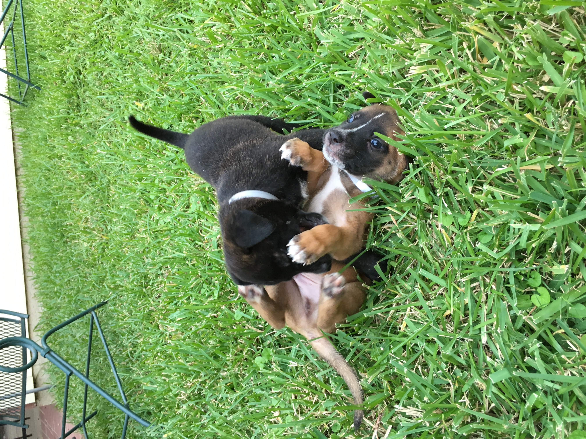

“FUCK!”
Last week there was a disaster and that disaster has a name.
Hurricane Helene
On Friday I woke up pleasantly surprised to find my power was on. Over 10% of my fellow Floridians – more than a million people – were not so fortunate. At least one was dead with the total toll continually rising.
Nothing to be done?
I took Murphy and Nix on our usual walk to the dog park. Unusually nobody else was there. Had they lost power? Had fallen trees blocked their driveways? Did they have to deal with damage to their cars? Their homes? I didn’t know and at least in some sense did not care. I was content my house was undamaged. A large tree branch almost landed on my car’s windshield but missed by a foot. It was like any other cloudy morning with a slight drizzle. Disaster and death happen all over the world every day and life goes on.
But it’s not like I can’t empathize with hurricane victims.
Les deux soleils sont levés
Comme chaque matin, j’ai d’la chance
J’ai mes deux reins et j’suis vivante
Toujours ensemble pour la journée
Toujours
Toujours
Hurricane Harvey
Years ago a different “H” hurricane hit Houston. I had driven back to Houston from Florida to start my senior year of college alongside my three housemates. We rented a unit in a duplex located between a convent and a cell phone tower. Three of us had lived together in the same house the prior year with the fourth housemate choosing to instead live with his girlfriend for their senior year. Our new fourth housemate was a friend of mine since freshman year, we’ll call him Max for this story.
Harvey approached Houston the first weekend of the semester. Flooding was expected. We were concerned about our cars. Max had parked his car in a friend’s apartment complex’s elevated parking garage but it got towed as the edge of the hurricane moved over the city. This was annoying. The four of us, all in it together from the beginning, all drove out to the tow yard in the early hours of the storm. We got Max’s car back, he parked somewhere else, and we all returned to the house to wait out the rest of it together.
Nothing to be done
The house quickly flooded. We moved everything we could to the second floor and elevated the one car still in the driveway. The power went out but we tried to enjoy ourselves. We grilled, we ate, we drank, we played Monopoly, and we had a pretty good time all things considered.
After a few days we made the decision to flee to campus. Campus had power and the floodwaters seemed low enough. We hopped in the car and drove off. As we were nearing campus the streets were still flooded and it was raining hard. We saw two idiots on foot struggling against the storm toward campus with their suitcases. As we got closer we realized they were our former fourth housemate and his girlfriend! We drove by splashing them with water and yelling insults as we passed.
Just kidding, they piled into the already crowded sedan with their additional luggage and we all made it to campus safely. I stayed in my former roommate’s double sleeping on their remarkably uncomfortable couch.
À l’ibis loin, loin d’ici
Efizio se promène
Dans les plaines du Mont Sacré
Sur la digue, il se ligue
Pour la guilde de Guido le guide
Il rejoint l’Anatole
Fils du duc Opozode
The aftermath
We were all looking forward to our senior year living in the house but when we were able to make it back and take a look it wasn’t looking great. A contractor estimating repairs summed it up as:

Indeed.
We initially did our best to help out:
But over time reality set in. The decision was made after a fairly conclusive mold test:
Our house was not livable. Our landlord disagreed, claiming we had broken the lease and demanding we pay rent for the full year – a small fortune to ask of poor college students who still had to find and pay for alternative housing. He yelled, threatened, threatened legal action, and left nasty texts and voicemails on my phone. Fortunately he only made idle threats – he was not a serious person. Had he pursued anything we had the support of each other and our community.
The community
We were far from alone in our suffering. Many people in Houston and other areas were in similar or far worse situations as myself and my housemates. Many other students lost their housing too.
Efforts by communities were organized including one to house displaced college students. One of my housemates was insistent on applying and within a few weeks we all moved in with a nice couple in a nice neighborhood near campus. Their younger daughter was a freshman at our college and their older daughter coincidentally worked at Microsoft. While we still missed our house and were sad about the situation affecting our senior year we were grateful for the help – I was grateful to have a bed to sleep in again.
We also got to play with and help raise their adorable foster puppies:

Microsoft, the hurricane job
I distinctly remember lying on that awful couch reading the email from a Microsoft recruiter: I was invited for a final round interview loop in Redmond, WA. I had applied and interviewed for an internship the previous year resulting in a “deferred” status. I had not been rejected but they had filled all open internships and said they would reach out next year about opportunities. And they did!
While living with the nice couple I was flown out to Seattle and stayed in a fancy hotel. I spent a day at the recruiting building on the main campus completing interviews with my future teammates and manager. It’d take some time to find out I had an offer but not too long after Hurricane Harvey seemingly upended my life I had a job after college. My dream job working where I wanted to on what I wanted to.
Murphy, the hurricane dog
After some time with the nice couple my housemates and I wanted to live on our own again. We ended up renting an apartment near campus. It wasn’t our house but it was ours for the rest of senior year.
With a job secured and my living situation clarified I decided to adopt a dog. I went to the local shelter with a housemate and found Murphy. She was the most scared dog in the shelter but I knew she was the one.

Murphy was rescued in Galveston, TX, likely displaced during Hurricane Harvey. She was clearly abused but has lived a happy (if not spoiled) life since adoption. She’s been my best friend for approaching seven years.
Horrors and hope ahead
Things tend to work out over time.
Something to be done?
Still it’s frustrating how little we do about hurricanes given how much we know about them. If you live in Florida you’re likely to experience one every year. We can predict when in the year they will happen. We can watch them from above. We can predict the path they will take. We can predict expected damages and loss of life. We can predict we’ll continue having more “historic” hurricanes at an alarming rate.
We have programs for dealing with the aftermath but little prevention. Our response is often reactionary and primitive given the technology available to us. We can’t stop hurricanes (?) but it seems like we could do a lot more to prevent the negative outcomes they cause if someone motivated (or rather incentivized) took the problem seriously. Capital, strategy, and execution. But what do we spend our resources and time on instead?
To be clear I haven’t helped anyone affected by Hurricane Helene. I haven’t donated my money. I haven’t volunteered my time. I haven’t offered anyone a place to stay. Some would argue this is immoral and, to a large extent, I’d agree. Yet it’s exhausting to care about every bad thing going on in the world. While technology has made it trivial to help people after disasters in most cases the disaster-recovery cycle tires.
Écoute bien, cette musique a déjà fait plusieurs tours
Le mouvement se répète, il s’incruste dans ta tête
Tu voudrais le faire sortir, mais ça n’peut jamais finir
Tu commences à intégrer le rythme répétitif
Tu commences à intégrer le rythme répétitif
Le mouvement perpétuel quand tu revois le motif
Tu vas bientôt regretter, est-ce que ça valait le coup ?
Tu te poses des questions, n’écoutes que la musique
Silver linings
After rain we can look for the silver linings. After Harvey I had Microsoft and Murphy.
I’ve been fortunate to have excellent communities around me at times of need. I could not be where I am today without my housemates, the nice couple, my friends, my family, and many others after Harvey.
Throughout life I’ve been lucky to have excellent advisors, mentors, managers, colleagues, and friends.
What’s next for me?
Life goes on. As I get a little older I realize life is about perspective. For me Hurricane Helene was just a rainy day. For others it will have effects for months and even years to come. I hope they find the support they need in their communities. I hope they find their silver linings. I hope one day I am in a better position to help others myself. I hope we can all do better to prevent such outcomes from predictable disasters in the future.
I did get to see this cool bird at the dog park on Friday: